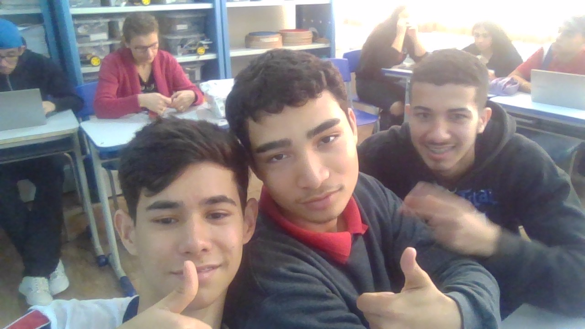

O colégio josé sarmento filho, de Iretama, agora apresenta um site em que se encontra vários detalhes sobre o colégio.
O Colégio Estadual José Sarmento Filho foi fundado em (parararara) e é monitorado pelo núcleo regional de campo mourão
as estatísticas de aprovação do colégio são:
98% de aprovação no ensino fundamental
97% de aprovaçao no ensino médio
um pouco da história do colégio
No ano de 1.970 (Um mil novecentos e setenta): Ginásio estadual de Iretama, iniciou suas atividades, em um prédio de madeira, que pertencera anteriormente ao Grupo escolar de Iretama localizava-se e ainda hoje localiza-se na rua Geraldo Gomes Vieira referido prédio encontrava-se as condições precárias de conservação, e fora cedido a título gratuito pelo governo do estado do Paraná.
Seu primeiro corpo administrativo e docente foi constituido por elementos de profissões variadas, os quais contribuiram para o desenvolvimento do referido Estabelecimento de ensino por ocasião de seu funcionamento, a administração do Ginásto estadual de Iretama, esteve constituida:
LUIS CARLOG RENZETTI, (Tabelião e oficial do Registro 01- vil economista), (Diretor)
HELENA GOMES MARTINS (Secretária e professora)
GERALDO GOMES VIEIRA (Funcionário municipal, Contabilista e professor)
ADELAIDE SAMPAIO LIMA (Professora)
MARTA ELIZA PEREIRA MELO (Professora)
DJALMA FERRAZ RUIZ (Professor)
CARMEM BASÍLIO (Professora)
O Ginásio estadual obteve autorização para seu funcionamento, de acordo com a Lei Estadual / 4.978 a partir do ano de 1.970, entidade esta sustentada pelo Governo Estadual. No principio contava o estabelecimento, com 112 alunos, sendo 67 no período diurno e 45 no período noturno. Ano a ano, continuava o fluxo de jovena, que procuravam a secretaria do Ginásio, afim de conseguir sus matrícula. Em 1.971, afastou-se a professors Carmen Basílio, assumindo em seu lugar a professors Sirene Gaspar Teixeira, que exercia também a função de Diretor do Grupo Escolar de Iretama.
Em 1.971 faleceu o professor Graldo Gomes Vieira tende assumido em seu lugar o professor Idoval Vieira en 1.972 assumiu a Direção a professora efetiva Lusia Bueno Martins que exerce a função até a presente data; foi primeiramente sua secretária a Professora Tereza Perez de Marco, já falecida, e posteriormente a professora efetiva no primário Maria Sofia Klatki, e atualmente responde pela Secretaria a Professora Amelia Bragatto Pepino. Contribuiram ainda, no corpo docente as professoras Marilene Pescador Carreiro e Madalena Pescador Pescador Pereira que / permaneceram somente un ano em nossa cidade, bem como o professor Aldo José de Brito, e a Professora Rada Chede Ajaime. Hoje em dia funciona o Ginásio Estadual, em um prédio de alvenaria, possuindo os requisitos necessários e indispensáveis ao bom andamento escolar. A construção foi iniciada durante a gestão do Prefeito / Wassilio Mamus, e terminada na presente gestão do Prefeito Joaquin Correia Gonçalves. A construção foi conseguida junto ao / Governador Jayme Canet Junior, o qual, a bem da verdade não mediu esforços para dotar a cidade de Iretama, com um dos prédios mais modernos do momento. O corpo administrativo e docente consta dos seguintes elementos: DIRETORA: LUZIA B. BUENO MARTINS, SECRE TARIA: AMELIA BRAGATTO PEPINO, PROFESSORES: MARIA ELIZA MELO OLIVEIRA, LUIZ CARLOS RENZETTI, MAURICIO JOSÉ DE MELO, HELENA MARTINS PEPINO, DIRCE GALEGO GARCIA, ZENAIDIO PEREIRA MELO, MARIA SOFIA KLATKI, MARIA DO CARMO BARBOSA, VILMA MARIA ALVES, EUNICE CARVALHO GOMES FIGUEIREDO. Conta atualmente o Ginásio Estadual com 540 alunos devidamente matriculados, tendendo no futuro a aumentar o número de educandos.
atualmente o colégio possui 2(duas) turmas de ensino médio e uma turma de formação de docentes.(até 2022 o colégio possuia apenas formaçao de docentes, e depois vindo as turmas de ensino médio)
(fotos da turma do segundo ano do ensino médio integral na matéria de programação)

aqui, fotos antigas do colégio
atualmente a pagina do facebook do colégio é:
essa.


_page-0001.jpg)